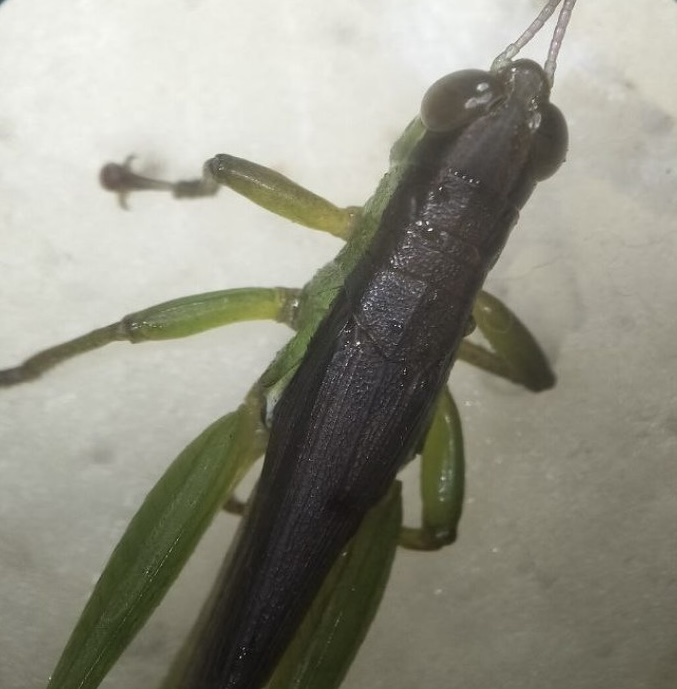

Chapter 7
üêõ Entomology - Study of Insects
Microscopic examination of insect morphology and adaptations
Slide 1
Apis mellifera
Western Honeybee
Whole Mount (W.M.)
Key Features:
Pollen Basket (Corbicula) - concave area on hind legs with stiff hairs
Proboscis - long, tube-like mouthpart for sucking nectar
⚙️ Functions:
- Pollen collection and transport to hive
- Nectar feeding from flowers
- Proboscis can extend for feeding and coil when not in use
Importance:
- Understanding pollination biology
- Reveals foraging behavior of bees
- Demonstrates evolutionary adaptation of insect mouthparts
Slide 2
Anopheles spp.
Mosquito (Malaria vector species)
Longitudinal Section (L.S.)
Key Features:
Head Capsule - contains compound eyes and antennae with sensory hairs
Mouthparts (Proboscis Complex) - specialized for blood-feeding
Labrum - forms food canal for sucking blood
Mandibles & Maxillae - cut into host's skin
Hypopharynx - delivers saliva with anticoagulants
Sensory Palps - detect heat, moisture, and host odors
Importance:
- Understanding vector biology and malaria transmission
- Species identification in mosquito research
- Evolution of piercing-sucking mouthparts
Slide 3

Musca domestica
Housefly
Whole Mount (W.M.)
Key Features:
Tarsal Claws - at tip of each leg for gripping rough surfaces
Pulvilli - pad-like structures beneath claws with sticky hairs
Sensory Hairs - detect surface texture and chemicals
⚙️ Functions:
- Mechanical anchoring during walking or landing
- Walking on smooth vertical or inverted surfaces
- Movement coordination and feeding behavior
Importance:
- Demonstrates insect locomotion adaptations
- Surface adhesion mechanisms in insects
- Understanding how flies contaminate surfaces
Slide 4

Bombyx mori
Silkworm
Whole Mount (W.M.)
Key Features:
Segmented body - head, thorax, abdomen
Chewing mouthparts adapted for mulberry leaves
Prolegs and spiracles visible
Large paired silk glands for silk production
Importance:
- Source of natural silk (sericulture industry)
- Model organism in biotechnology and genetics
- Pupae used as food and animal feed
Slide 5
Coptotermes formosanus
Termite / White Ant
Whole Mount (W.M.)
Key Features:
Soft-bodied, pale insects resembling ants
Social structure - king, queen, workers, soldiers
Chewing mouthparts for wood and cellulose
Symbiotic gut protozoa for cellulose digestion
Importance:
- Economic pest - damages wood, crops, and buildings
- Ecological role - decomposers, recycle cellulose
- Model for studying social insect behavior
Slide 6
Formica spp.
Ant
Whole Mount (W.M.)
Key Features:
Segmented body with narrow waist (petiole)
Elbowed antennae for sensing environment
Strong mandibles for biting and carrying
Social organization - queen, workers, soldiers
Importance:
- Soil aeration, seed dispersal, decomposition
- Some species as agricultural pests
- Model for studying social behavior and cooperation
Slide 7

Lampyridae (family)
Firefly / Lightning Bug
Whole Mount (W.M.)
Key Features:
Segmented body - head, thorax, abdomen
Soft elytra and membranous hindwings
Light-emitting organs (photocytes) in abdomen
Antennae for sensing environment
Importance:
- Bioluminescence for mating signals
- Predators of small insects in larval stage
- Studied for bioluminescent proteins (luciferase)
Slide 8

Magicicada spp.
Cicada
Whole Mount (W.M.)
Key Features:
Large compound eyes and short antennae
Membranous wings for flight
Tymbal organs on abdomen for sound production
Piercing-sucking mouthparts for plant sap
Importance:
- Herbivores that provide food for predators
- Studied for sound production and life cycles
- Minor economic impact on young trees
Slide 9

Culex pipiens
Common Mosquito
Whole Mount (W.M.)
Key Features:
Slender body - head, thorax, abdomen
Proboscis for piercing and sucking blood
Antennae to detect host cues (CO₂, odors)
Long, narrow wings with venation
Sexual dimorphism - males with bushy antennae
Importance:
- Vector of diseases (malaria, dengue, West Nile virus)
- Crucial for vector control and epidemiology
- Model for understanding sensory biology
Slide 10

Drosophila spp.
Fruit Fly
Whole Mount (W.M.)
Key Features:
Small, segmented body - head, thorax, abdomen
Compound eyes and short antennae
Three pairs of legs and one pair of functional wings
Mouthparts adapted for sponging liquids
Visible bristles (setae) and reproductive organs
Importance:
- Widely used genetic and developmental research model
- Short life cycle for inheritance pattern studies
- Educational tool for insect morphology
Slide 11

Bombus spp.
Bumblebee
Whole Mount (W.M.)
Key Features:
Robust, hairy body - head, thorax, abdomen
Large compound eyes and short antennae
Three pairs of legs with pollen baskets
Two pairs of wings for flight
Proboscis for nectar feeding
Importance:
- Important pollinators for agriculture
- Supports plant reproduction in ecosystems
- Studied for behavior and flight mechanics
Slide 12

Locusta migratoria
Migratory Grasshopper
Longitudinal Section (L.S.)
Key Features:
Compound eyes with multiple ommatidia for wide-angle vision
Antennae as sensory organs (touch, smell)
Chewing mouthparts for plant material
Wing veins for strength and flexibility
Strong hind legs specialized for jumping
Importance:
- Major agricultural pest affecting crops
- Flight studies help understand wing mechanics
- Compound eyes provide model for vision studies
- Food source for birds, reptiles, and mammals
Slide 13

Coccinella septempunctata
Seven-spotted Ladybird / Ladybug
Whole Mount (W.M.)
Key Features:
Rounded, convex body with red elytra and seven black spots
Head with compound eyes and short antennae
Three pairs of legs for walking
Elytra cover membranous hindwings
Chewing mouthparts for feeding on aphids
Importance:
- Natural predator of pests like aphids
- Contributes to pest management in agriculture
- Studied in entomology and ecology research
Slide 14
Gerridae (family)
Water Strider
Whole Mount (W.M.)
Key Features:
Slender, elongated body adapted for surface locomotion
Long legs with hydrophobic hairs
Head with compound eyes and antennae
Middle pair of legs for propulsion, hind pair for steering
Piercing-sucking mouthparts for feeding on trapped insects
Importance:
- Predator of small aquatic insects
- Behavioral studies of surface tension adaptations
- Model organism for biomechanics research
Slide 15

Danaus plexippus
Butterfly Proboscis
Whole Mount (W.M.)
Key Features:
Long, coiled tubular structure extending from head
Formed by two interlocked galeae
Flexible - can coil or extend for feeding
Adapted for sucking nectar from flowers
Sensory setae for taste detection
Importance:
- Allows nectar feeding from deep flowers
- Aids in plant reproduction through pollination
- Studied for insect morphology and feeding behavior
Slide 16
Atta spp.
Leafcutter Ant
Whole Mount (W.M.)
Key Features:
Strong mandibles for cutting leaves
Antennae for sensing and communication
Three pairs of legs for walking and carrying
Social structure - queen, workers, soldiers
Importance:
- Decomposes plant material, enriches soil
- Can damage crops by leaf cutting
- Studied for social behavior and colony organization
Slide 17
Carausius morosus
Stick Insect
Whole Mount (W.M.)
Key Features:
Long, slender body mimicking twigs or sticks
Head with compound eyes and thread-like antennae
Elongated thorax and legs for camouflage
Flexible abdomen for blending with branches
Chewing mouthparts for leaves
Importance:
- Camouflage for predator avoidance
- Studied for mimicry and insect morphology
- Demonstrates adaptation and evolution
Slide 18
Ephemera danica
Mayfly
Longitudinal Section (L.S.)
Key Features:
Transparent, membranous wings with visible vein patterns
Thoracic muscles supporting wing movement
Gills along abdomen for aquatic respiration (nymphs)
Compound eyes and antennae for sensing
Importance:
- Indicator of freshwater ecosystem health
- Studied for insect development and aquatic adaptations
- Demonstrates wing morphology and gill function
Slide 19

Carabus spp.
Ground Beetle
Longitudinal Section (L.S.)
Key Features:
Leg segments - coxa, femur, tibia, tarsus clearly visible
Extensor and flexor muscles controlling movement
Claws at end of tarsi for gripping surfaces
Tendon-like apodemes for muscle attachment
Exoskeleton for support and protection
Importance:
- Predator of soil-dwelling insects
- Demonstrates insect locomotion and biomechanics
- Understanding muscle-exoskeleton interaction
Slide 20
Hydropsyche spp.
Caddisfly Larva
Whole Mount (W.M.)
Key Features:
Soft, segmented body - head, thorax, abdomen
Chewing mouthparts for feeding on detritus and algae
Thoracic legs for locomotion
Case-building structures with silk glands
Gills along abdomen for aquatic respiration
Importance:
- Indicator of freshwater ecosystem health
- Demonstrates case-building and adaptation
- Studied for silk production and aquatic insect morphology